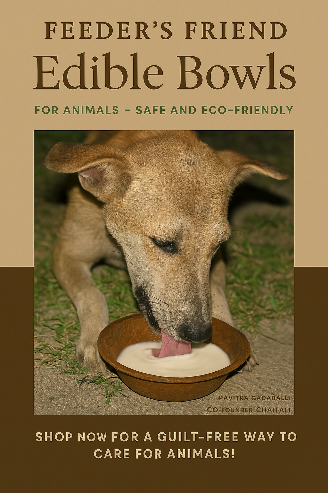

Our Products

Edible Bowls

Eco Treat Plates

Compostable Food Trays
Feeder's Friend was born out of a shared passion between Pavitra Gadaballi and Chaitali, two individuals deeply committed to the well-being of stray and domestic animals. What began as a simple idea—to make animal feeding more sustainable—has grown into a thoughtful movement that stands for love, care, and eco-conscious living. Our world is changing, and with it, so must the way we treat the beings who share our spaces.
At Feeder's Friend, we believe that every act of kindness towards animals can create a ripple of positive change. However, we also noticed that traditional feeding practices often involve materials like plastic and styrofoam that harm the environment and pose risks to animals. That's where our vision took root: to offer products that are not only safe for animals but also safe for the Earth.
Our range of products—edible bowls, eco treat plates, and compostable food trays—are carefully designed to serve a dual purpose: to feed with love and leave no waste behind. Made from natural, biodegradable materials, each item is a step away from pollution and a step closer to harmony with nature.
Feeder's Friend is more than just a brand; it's a community of compassionate individuals who care deeply for animals and the planet. Whether you're feeding a neighborhood pup, a stray cat, or supporting an animal shelter, our products are made for you. We are here to empower caretakers with better, cleaner options—because being kind shouldn't come at the cost of the environment.
Join us in our mission to make feeding smarter, safer, and more sustainable. Let's create a world where animals are loved and fed responsibly, where nature is respected, and where every product leaves behind not waste, but a lasting impact of compassion. With Feeder's Friend, you don’t just feed—you nurture.
Edible Bowls
Eco Treat Plates
Compostable Food Trays

Eco-Friendly

100% Edible

Supports Animal Welfare